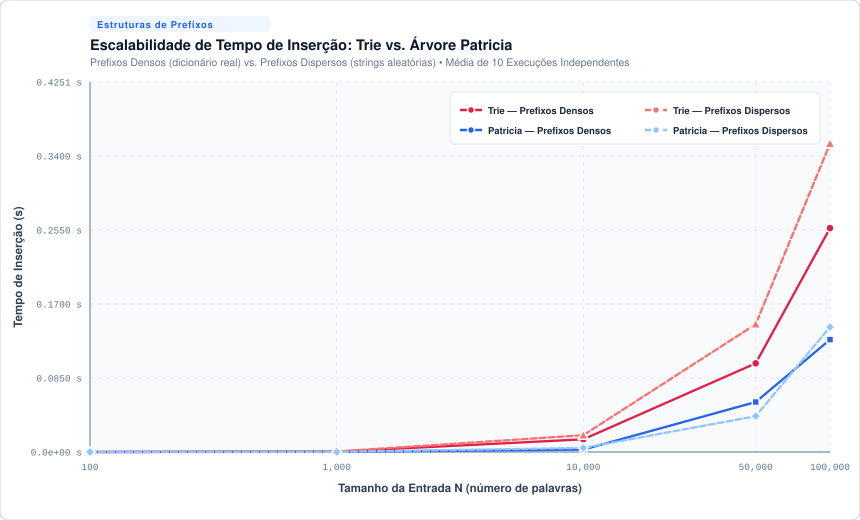
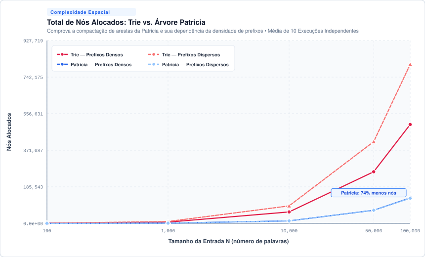
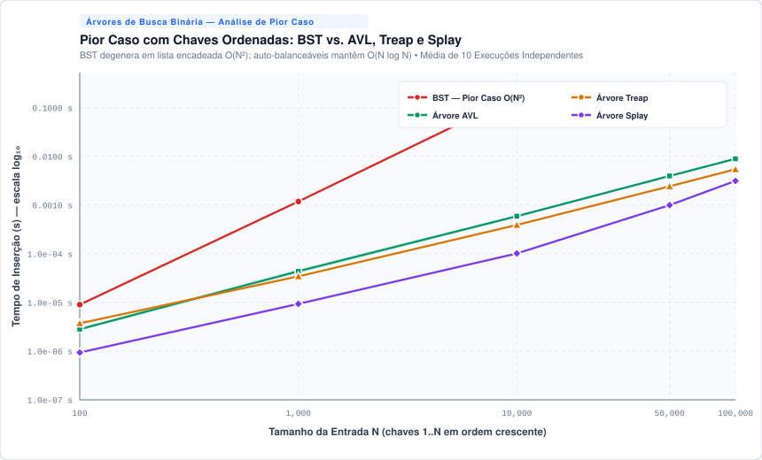
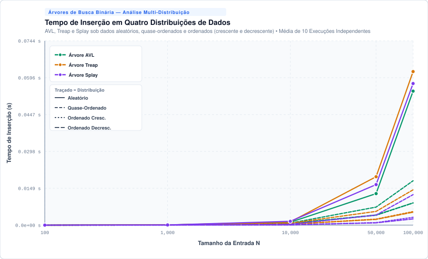
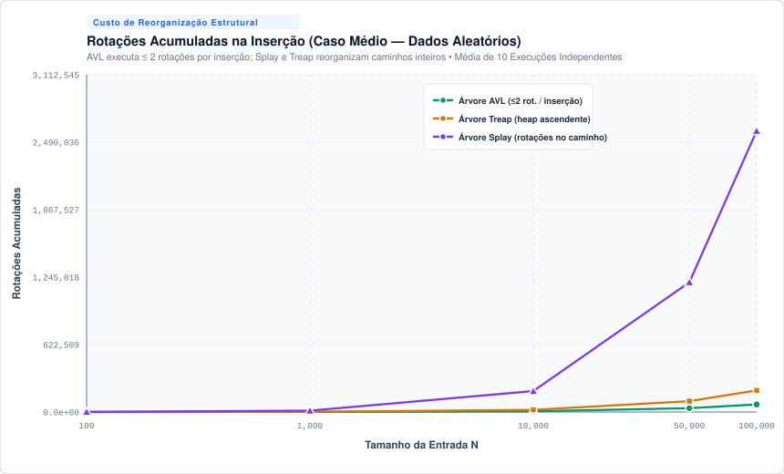
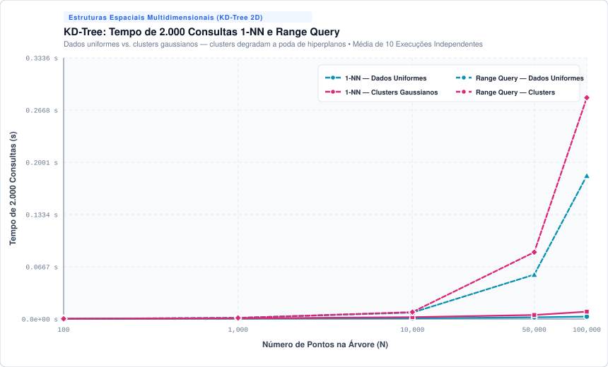

Rastreamento dos 3 Estados Estruturais
Demonstração visual das transformações estruturais (Seção 3 do relatório técnico)
Estado 1
Estrutura Inicial
Estado 2
Estado Intermediário
Estado 3
Pós-Remoção / Reorganização
Análise de Complexidade e Comparação Teórica
Matriz comparativa de complexidade assintótica das operações fundamentais e consumo espacial (Seção 4).
| Estrutura | Busca (Médio / Pior) | Inserção (Médio / Pior) | Remoção (Médio / Pior) | Complexidade Espacial | Operação Especializada |
|---|---|---|---|---|---|
| Trie | O(L) / O(L) | O(L) / O(L) | O(L) / O(L) | O(N · L · Σ) | Autocomplete: O(P + K) |
| Árvore Patricia | O(L) / O(L) | O(L) / O(L) | O(L) / O(L) | O(N · Σ) [Compactada] | Divisão de Aresta (Split): O(L) |
| Árvore Splay | O(log N) amort. / O(N) | O(log N) amort. / O(N) | O(log N) amort. / O(N) | O(N) | Autoajuste à Raiz: O(log N) amort. |
| Árvore Treap | O(log N) prob. / O(N) | O(log N) prob. / O(N) | O(log N) prob. / O(N) | O(N) | Split & Merge: O(log N) prob. |
| KD-Tree (2D) | O(log N) / O(N) | O(log N) / O(N) | O(log N) / O(N) | O(N · K) | 1-NN: O(log N) | Range: O(N^(1-1/K) + M) |
| Árvore AVL (Baseline) | O(log N) / O(log N) | O(log N) / O(log N) | O(log N) / O(log N) | O(N) | Balanceamento Rígido: FB ∈ {-1,0,1} |
| BST Padrão (Baseline) | O(log N) / O(N) | O(log N) / O(N) | O(log N) / O(N) | O(N) | Sem Garantia de Altura |
* Legenda:
N = quantidade de elementos; L = comprimento da string/chave; Σ = tamanho do alfabeto; K = número de dimensões (K=2); P = tamanho do prefixo; M = pontos retornados.
Gráficos Experimentais
Resultados médios obtidos após 10 execuções independentes para cada configuração (N = 100 a 100.000).
Fig 1: Tempo de Inserção (Trie vs. Patricia)

Fig 2: Contagem de Nós Alocados

Fig 3: Pior Caso da BST vs. Estruturas Balanceadas

Fig 4: Tempo sob 4 Distribuições de Entrada

Fig 5: Rotações Acumuladas na Inserção

Fig 6: KD-Tree (Consultas 1-NN e Range Search)
